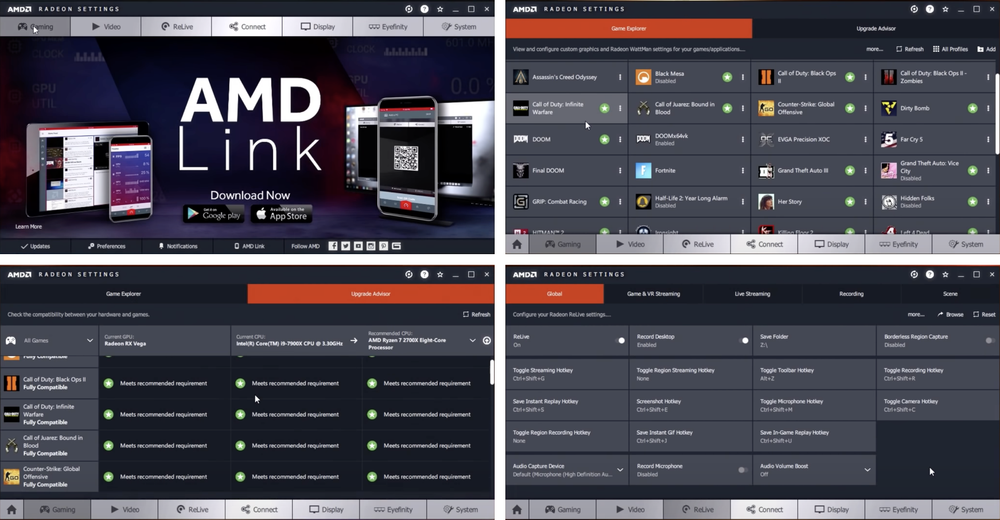
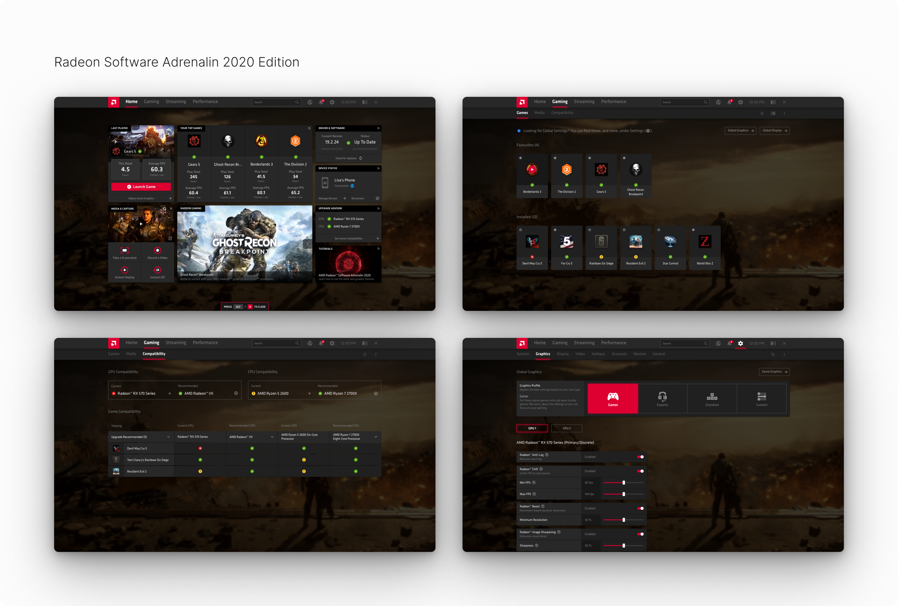
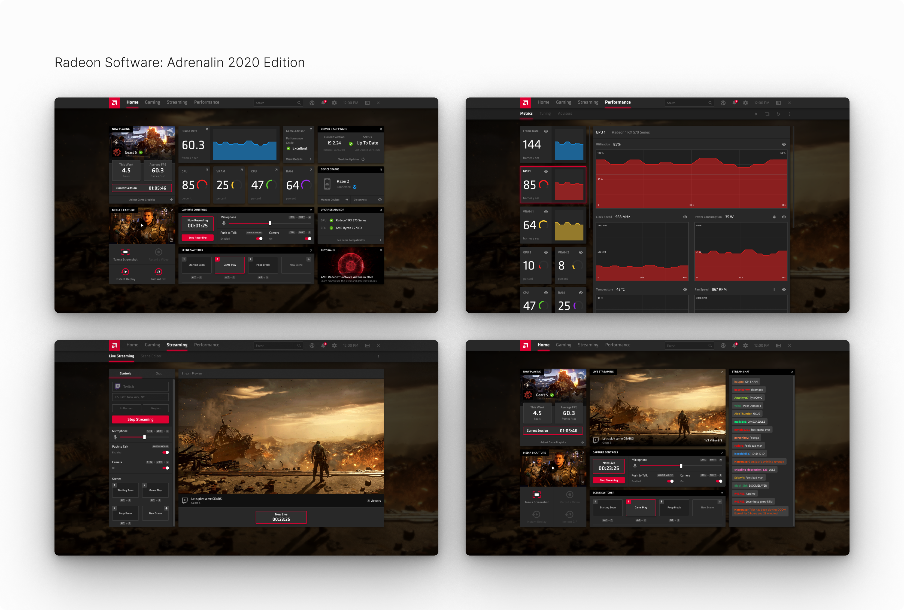

Context
AMD is a semiconductor company
that designs and produces computer processors, graphics cards, and
related technologies—Radeon Software is the device driver and utility
software package for their Radeon graphics cards and advanced processing
units. It includes features like game profile management, overclocking
and undervolting, performance monitoring, recording and streaming, etc.
During my internship, I worked on the release of Radeon Software:
Adrenalin (yes, they spelled it wrong) 2020 Edition, which I'll refer to
as RSX for short. I focused on validating the design by creating and
usability testing a high fidelity prototype. Other responsibilities
during my internship included starting RSX's first design system and
designing relevant screens and overlays when necessary.
Current State
Prior to the release of RSX, Radeon Software: Adrenalin was in its 2019
Edition. This version had a dated UI that had been used for years—users
were extremely familiar and comfortable with the current information
architecture and navigation.

Future State
In the the upcoming RSX driver update, Radeon Software would replace
Radeon Settings as a comprehensive suite that included drivers,
settings, and additional features for Radeon graphics cards. Some of the
new innovative features included Radeon Boost, Radeon Anti-Lag, Radeon
Image Sharpening, Radeon Integer Display Scaling, AMD Link Streaming,
and Integrated Web Browsing.

The biggest change Radeon Software brought was a completely revamped
user interface. Compared to its predecessor, Radeon Software was
designed to have a more modern and user-friendly interface—the intention
was to allow users to quickly access the latest software features, game
stats, performance reports, and driver updates all from one convenient
location, creating an immersive gaming experience.

When I was brought on board, I was tasked with validating the experience
of RSX. Despite the revamped design being close to completion, it had
barely been tested with actual users. Using the existing design, it was
my job to create a high-fidelity prototype and conduct usability
testing. While the future state was more modern and sleek, what mattered
was whether it was actually intuitive or not. Would users have an easy
time understanding and navigating the new UI, let alone be willing to
spend the time learning and adopting it?
User Flows
Since RSX included several new features, it was necessary to design user
flows for both new and existing features. It was also important to
include a variety of tasks for users of different experience levels with
gaming and Radeon Software. How would the experience differ for novice
vs. experienced users? With these notes in mind, I designed the
following user flows and created a high fidelity prototype accordingly —
complete with animations, transitions, overlays, and keyboard shortcuts.
-
User Flows/Tasks
- Open Radeon Software
- Launch a game (Gears 5)
- Open Radeon overlay and sidebar
- Check software and hardware settings
- Enable/disable Radeon FreeSync
- Enable and/or modify Radeon Boost
- Enable Radeon performance metrics overlay
- Open performance tools and overclock GPU
- Open performance tuning, modify fan speed
- Open web browser
- Check for an update
- Change default settings profile
- Open and change video settings
- Create a new scene for streaming
- Start a streaming session
- Enable and capture an instant replay
- Enable and record a video of desktop
- Edit and trim a video
- Upload and share a video